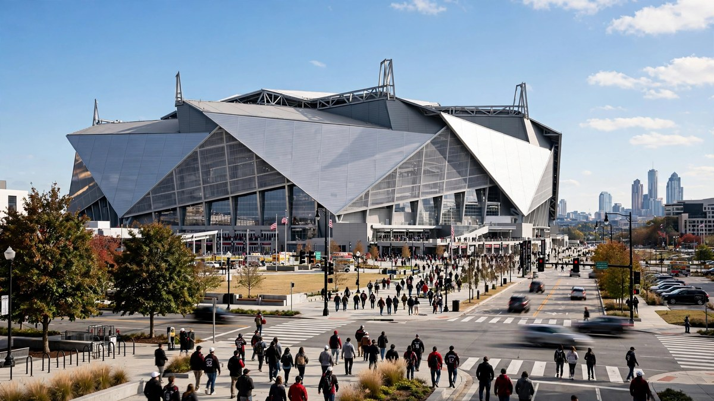

Penix को कोई चोट पदनाम नहीं, रविवार को Bears के खिलाफ शुरुआत तय
Baltimore के खिलाफ पसलियों में चोट के बाद Penix ने पूरे सप्ताह पूर्ण अभ्यास किया, और कोच Kevin Stefanski ने कहा कि Chicago के खिलाफ उन पर कोई पाबंदी नहीं होगी।

मुख्य बिंदु
- Michael Penix Jr.
- इस फैसले से सप्ताहांत के लिए Atlanta की टीम को लेकर मुख्य संदेह दूर हो गया। Penix पूरे सप्ताह अभ्यास में पूर्ण भागीदार रहे। काम के उस पूरे सप्ताह के बाद, और फिर एक साफ अंतिम रिपोर्ट के बाद, वह…
- Penix को पिछले रविवार Baltimore Ravens के खिलाफ मैच के चौथे क्वार्टर के अंत में पसलियों में चोट लगी। Atlanta वह मैच ओवरटाइम में 30 से 23 से हार गया। Penix मैच पूरा नहीं कर पाए, और अंतिम चरणों ने…
Michael Penix Jr. रविवार को मेहमान Chicago Bears के खिलाफ Atlanta Falcons के लिए क्वार्टरबैक के रूप में शुरुआत करेंगे। Penix को शुक्रवार, 16 अक्टूबर की अंतिम चोट रिपोर्ट में कोई चोट पदनाम नहीं मिला, और मुख्य कोच Kevin Stefanski ने कहा कि Atlanta के Mercedes-Benz Stadium में होने वाले मैच में क्वार्टरबैक पर कोई पाबंदी नहीं होगी। किकऑफ पूर्वी समय अनुसार दोपहर 1 बजे तय है।
इस फैसले से सप्ताहांत के लिए Atlanta की टीम को लेकर मुख्य संदेह दूर हो गया। Penix पूरे सप्ताह अभ्यास में पूर्ण भागीदार रहे। काम के उस पूरे सप्ताह के बाद, और फिर एक साफ अंतिम रिपोर्ट के बाद, वह Chicago के खिलाफ पहले स्नैप से हमले का नेतृत्व करने की स्थिति में हैं, बजाय इसके कि कोई बैकअप शुरुआत करे।
पसली की चोट कैसे लगी
Penix को पिछले रविवार Baltimore Ravens के खिलाफ मैच के चौथे क्वार्टर के अंत में पसलियों में चोट लगी। Atlanta वह मैच ओवरटाइम में 30 से 23 से हार गया। Penix मैच पूरा नहीं कर पाए, और अंतिम चरणों ने दिखाया कि उनके मैदान से जाने के बाद Falcons के लिए अंतर कितना कम हो गया।
बैकअप Tua Tagovailoa ने ओवरटाइम में Penix की जगह ली। अपने दूसरे खेल पर Tagovailoa ने एक इंटरसेप्शन फेंका जिसने मैच समाप्त कर दिया। उस छोटी और महंगी उपस्थिति ने रेखांकित किया कि अभ्यास के इस सप्ताह में Penix का स्वास्थ्य इतना महत्व क्यों रखता था। Atlanta ने एक ही सीरीज में देखा था कि जब उसका शुरुआती क्वार्टरबैक बाहर होता है तो मैच कितनी तेजी से बदल सकता है।
एक सीजन जो पहले से बहाली से बना है
26 वर्षीय Penix ACL सर्जरी से अपनी बहाली पूरी करते हुए सीजन के पहले दो सप्ताह चूक गए। तब से उन्होंने तीन शुरुआत की हैं, और Falcons ने उनके स्टार्टर रहते हुए उनमें से दो जीती हैं और एक हारी है।
उन शुरुआतों में उनके आंकड़े स्थिर रहे हैं। Penix ने 77 पासों में से 52 पूरे किए हैं, 67.5 प्रतिशत की पूर्णता दर के साथ, 719 गज के लिए। उन्होंने तीन टचडाउन और एक इंटरसेप्शन फेंका है, और उनकी पासर रेटिंग 104.8 है। ये आंकड़े Atlanta को अभ्यास के पूर्ण काम में उनकी वापसी और बिना पाबंदी वाली शुरुआत का स्वागत करने का स्पष्ट कारण देते हैं।
Bears के खिलाफ मैच अब सीजन में उनकी चौथी शुरुआत होगा। एक क्वार्टरबैक के लिए जिसने साल की शुरुआत अभी भी घुटने की बहाली पूरी करते हुए की थी, पसली की चोट के बाद अभ्यास का पूरा सप्ताह एक मजबूत संकेत है कि Falcons उन्हें सामान्य काम के लिए तैयार देखते हैं, सीमित योजना के लिए नहीं।
Falcons की अन्य चोट खबरें
रक्षात्मक एंड Za'Darius Smith ने कन्कशन प्रोटोकॉल पास कर लिया है। गर्दन की चोट के कारण वह रविवार के लिए अभी भी संदिग्ध सूची में हैं, इसलिए किकऑफ के करीब उनके दर्जे पर नजर रखनी होगी। Smith का प्रोटोकॉल पास करना एक कदम है, लेकिन संदिग्ध टैग का अर्थ है कि मैच में उनकी जगह तय नहीं है।
कॉर्नरबैक C.J. Henderson कमर की चोट के कारण बाहर हैं। उनकी अनुपस्थिति Chicago के खिलाफ सेकेंडरी में एक विकल्प हटा देती है, और Atlanta को बाकी कॉर्नरबैक समूह के साथ उनके स्नैप कवर करने होंगे।
रविवार के लिए इसका क्या अर्थ है
Atlanta दो जीत और तीन हार के रिकॉर्ड के साथ मैच में आता है। Penix के शुरुआत के लिए तैयार होने के साथ, Falcons के पास घरेलू मैच के लिए उनका पहली पसंद क्वार्टरबैक है, एक मैच जो उन्हें अपने सीजन को स्थिर करने के लिए चाहिए। शुक्रवार की मुख्य बात सरल है। Ravens से हार में लगी पसली की चोट ने उन्हें बाहर नहीं रखा, उनके अभ्यास सप्ताह को सीमित नहीं किया, और Stefanski के अनुसार रविवार को उन्हें सीमित नहीं करेगी।
Chicago उस क्वार्टरबैक का सामना करेगा जिसके इर्द गिर्द Atlanta ने इस सीजन अपने हमले को बनाने की योजना बनाई थी, टीम की अपनी रिपोर्ट के अनुसार पूर्ण ताकत में। Penix के लिए काम एक साफ स्वास्थ्य रिपोर्ट को एक सप्ताह पहले उन्हें घायल छोड़ देने वाली ओवरटाइम हार से अधिक साफ परिणाम में बदलना है।